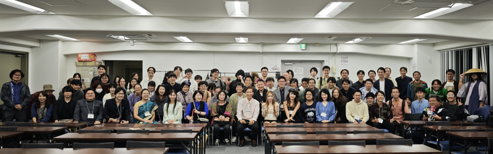

01 / SHARE
旅の情報を共有する
交通手段、国境越え、宿、費用、現地事情など、ガイドブックだけでは得にくい実体験を共有します。
世界を旅する人たちが集い、リアルな経験や情報を分かち合う。旅の不安を少し減らし、次の一歩を踏み出すきっかけをつくる交流イベントです。
海外の日本人宿のように、旅人同士が集まり、情報交換をしたり、旅の思い出を語り合ったりできる場所を日本にもつくりたい。そんな思いから「旅人サミット」は始まりました。
旅のスタイルも、訪れた国も、旅に出る理由も人それぞれ。経験を持ち寄ることで、新しい発見や出会いが生まれます。
参加対象は、世界を長期で旅している人、会社勤めをしながら休暇を利用して海外へ出かける人、そして、これから世界へ羽ばたきたいと考えている人。旅の経験の有無やスタイルを越えて、学び合える場を目指しています。

旅人のリアルな経験を共有し、これから旅に出る人も、旅を続ける人も、より安全に、より自由に旅を楽しめる環境を目指します。
交通手段、国境越え、宿、費用、現地事情など、ガイドブックだけでは得にくい実体験を共有します。
経験者の知見を次の旅につなげ、未訪問の国や地域への不安を少しでも減らすことを目指します。
旅の仲間や相談相手、新たな視点に出会える場をつくり、旅の楽しみをさらに広げます。
イベント当日の出会いを一度きりで終わらせず、旅人が持つ実体験を蓄積し、これから旅する人にも役立つ情報として届けていきます。
世界各地の地域別ブースを設置。訪問経験のある旅人から、治安や移動、現地事情などのリアルな情報を聞き、集まった知見を整理してホームページなどで公開することを目指します。
一般観光客にはアクセスが難しい国や地域を訪れた旅人が、現地の状況や旅の実体験を講演形式で発表。報道や一般的な観光情報だけでは知りにくい現地の姿を共有します。
旅人同士の情報交換を通じて、未訪問の国や地域への不安を減らし、安全で円滑な旅につながる情報を広げていきます。
旅の話に花が咲く。国や世代、旅のスタイルを越えて交流する時間。


少しずつ輪を広げながら、旅人が出会う場を育てています。
参加者56人。現役旅人が集まり、旅の情報や経験を共有する交流イベントを初開催。
参加者96人。前回を大きく上回る旅人が参加し、交流の輪がさらに広がりました。
世界を旅していると、出会う旅人の多くが関西出身だと感じることがあります。もしかすると、東京だけでなく大阪にも、旅人サミットを求める声が多くあるのではないか。そんな考えから、次回は大阪での試験開催を計画しています。
大阪開催が盛会となれば、今後は東京と大阪で年に1回ずつ開催することを目指します。さらに需要があれば、九州や北海道など、全国各地での開催も視野に入れていきます。
世界を長期で旅している人、会社勤めをしながら休暇を利用して海外へ出かける人、そして、これから世界へ羽ばたきたい人も参加対象です。旅人同士で経験や情報を共有し、新しいつながりを見つけませんか。
次回は大阪での開催を計画中です。開催日・参加申込方法などの詳細は、決まり次第ご案内します。
ページ上部へ戻る